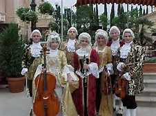

The Lighthouse Bistro Entertainment Schedule
We have some very special concerts coming up next month. You won't want to miss these. Schedule your reservations now. Each concerts begins at 8pm and will run approximately 2 hours in length.
May 1st - 10th - Nightly
Rondo Veneziano - Baroque period music. Fascinating period costumes. Listen to Incontro.
May 15th - 20th - Nightly

Rondo Venziano - Group2 - The second touring group of this chamber orchestra. Incredible music. Listen to Pulcinella.